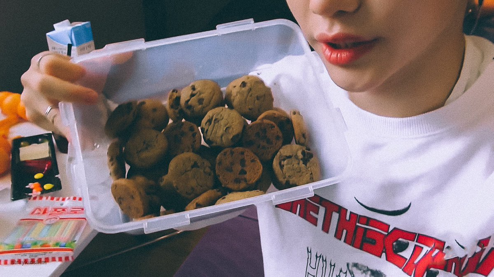

Cookies by yours truly |Felix Lee

INGREDIENTS: (makes around 15 cookies)
- 1 cup bread flour
- 2/3 cup all purpose flour
- 2 tsp baking powder
- 1 tsp salt
- 1/2 cup butter (melted)
- 1 cup dark brown sugar
- 1/3 cup sugar
- 1 tsp instant coffee powder
- 1 tsp vanilla extract
- 1 egg yolk
- 1 whole egg
- 3/4 to 1 cup of chocolate chips
DIRECTIONS:
- Preheat oven to 350F.
- In a bowl, mix flours, baking powder and salt. Set aside.
- In another bowl, beat egg and egg yolk. Add butter, brown sugar, sugar, vanilla and instant coffee powder.
- Mix wet ingredients until well combined and slowly add dry ingredients to form a dough.
- Add chocolate chips and combine.
- Roll the dough into small balls and press to make a nice shape.
- Place cookies on baking tray and spaced out.
- Bake at 350F for 10 min or until the bottom is nice and brown.
- Cool for 10 minutes and enjoy.
THE END!!